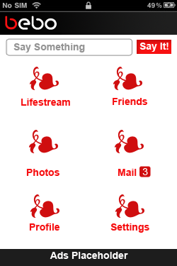
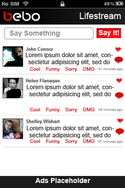
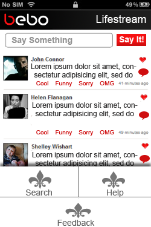
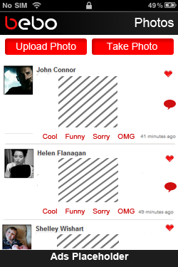
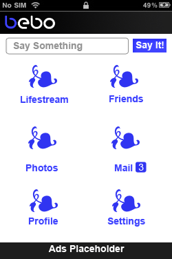
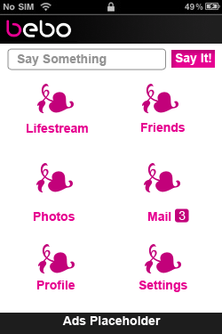

Features and UX Suggestions for Bebo Mobile
Objective 1: Format Appropriately for Mobile
Problem: Current UI is hard to navigate due to lack of emphasis on important aspects and small buttons/text boxes.
Method:
- Make Bebo header bigger/more prominent
- Have a dashboard screen which has all the links (Home, Profile, Friends, etc) in icon styled links.
- Make “Say Something” Bar bigger and more easily accessible
- For Mail, add a small notification image showing number of new messages.
- Photo should just be an upload from phone or taking a picture using phone.
Objective 2: Remove any clutter
Problem: There are redundant links and a features not highly used on mobile.Method:
- Remove “Edit Profile” when in “Profile” view. (Keep that for desktop Bebo)
- Remove “My Friends” when in “Profile” view (redundant, already is a main menu item)
- Remove as much text as possible, like “Say Something” (put that into the text box instead)
- (In Android) Add Feedback, Help, and Search to Menu
Objective 3: Keep Bebo’s Culture, but stay simple
Problem: Customization settings are complicated and some phrasing is ambiguous.Method:
- Settings should let people customize the icon colors (which I mocked in red). The First B of Bebo could also change. (Only give uses mono-colored options, less hassle compared to link/box colors, and looks slick)
- Instead of “Home” as a dashboard item, it can be called “Lifestream.” More clear/direct
Mocks:
|  |  |
|  |  |
|  |  |
Here are some features I would focus on implementing for a mobile app. These are just quick hashes of what I think could be appropriate and still stick to the Bebo brand.